In this example we shall demonstrate the spatially adaptive solution of the steady 3D Navier-Stokes equations using the problem of developing pipe flow.
The example problem
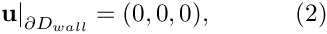 on the curved wall 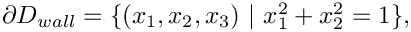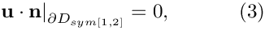 (where 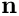 is the outer unit normal vector) on the symmetry boundaries![$ \partial D_{sym[1]} = \{(x_1,x_2,x_3) \ | \ x_1=0\} $](form_7.png) and 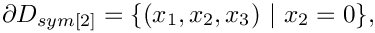 and 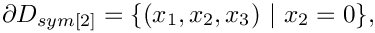 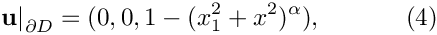 on the inflow boundary, 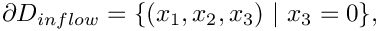 and finally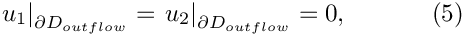 (parallel flow) on the outflow boundary 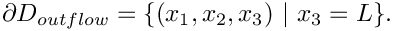 Note that the axial velocity component, 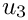, is not constrained at the outflow. Implicitly, we are therefore setting the axial component of traction on the fluid to zero,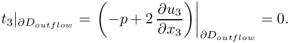 Since 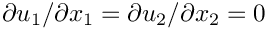 in the outflow cross-section [see (5], and the flow is incompressible, this is equivalent to (weakly) setting the pressure at the outflow to zero,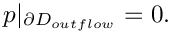 |
![\[ Re\phantom{i}u_j\frac{\partial u_i}{\partial x_j} = - \frac{\partial p}{\partial x_i} + \frac{\partial }{\partial x_j} \left( \frac{\partial u_i}{\partial x_j} + \frac{\partial u_j}{\partial x_i} \right), \ \ \ \ \ \ \ \ \ \ (1) \]](form_0.png)
![\[ \frac{\partial u_i}{\partial x_i} = 0, \]](form_1.png)
Results for Taylor-Hood elements
The figure below shows the results computed with oomph-lib's 3x3x3-node 3D adaptive Taylor-Hood elements for the parameters 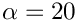, 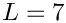 and  . The large exponent imposes a very blunt inflow profile, which creates a thin boundary layer near the wall. Diffusion of vorticity into the centre of the tube smooths the velocity profile which ultimately approaches a parabolic Poiseuille profile. If you are viewing these results online you will be able to see how successive mesh adaptations refine the mesh – predominantly near the entry region where the large velocity gradients in the boundary layer require a fine spatial discretisation. Note also that on the coarsest mesh, even the (imposed) inflow profile is represented very poorly.
. The large exponent imposes a very blunt inflow profile, which creates a thin boundary layer near the wall. Diffusion of vorticity into the centre of the tube smooths the velocity profile which ultimately approaches a parabolic Poiseuille profile. If you are viewing these results online you will be able to see how successive mesh adaptations refine the mesh – predominantly near the entry region where the large velocity gradients in the boundary layer require a fine spatial discretisation. Note also that on the coarsest mesh, even the (imposed) inflow profile is represented very poorly.


Global parameters and functions
The problem only contains one global parameter, the Reynolds number, which we define in a namespace, as usual.
The driver code
Since the 3D computations can take a long time, and since all demo codes are executed during oomph-lib's self-test procedures, we allow the code to operate in two modes:
- By default, we specify error targets for which the code refines the mesh near the inflow region, and allow up to five successive mesh adaptations. The code is executed in this mode if the executable is run without any command line arguments.
- If the code is run during the self-test procedure (indicated by specifying some random command line argument), we only perform one level of adaptation to speed up the self-test. However, because the original mesh is very coarse, the first mesh adaptation refines all elements in the mesh (cf. the animation of the adaptive mesh refinement shown above), so that no hanging nodes are created – not a good test-case for a validation run! Therefore adjust the error targets so that the first (and only) mesh adaption only refines a few elements and therefore creates a few hanging nodes.
The main code therefore starts by storing the command line arguments and setting the adaptation targets accordingly:
We then create a DocInfo object to specify the labels for the output files, and solve the problem, first with Taylor-Hood and then with Crouzeix-Raviart elements, writing the results from the two discretisations to different directories:
The problem class
The problem class is very similar to the ones used in the 2D examples. We pass the DocInfo object and the target errors to the Problem constructor.
The function Problem::actions_after_newton_solve() is used to document the solutions computed at various levels of mesh refinement:
The function Problem::actions_before_newton_solve() is discussed below, and, as in all adaptive Navier-Stokes computations, we use the function Problem::actions_after_adapt() to pin any redundant pressure degrees of freedom; see another tutorial for details.
Finally, we have the usual doc_solution() function and include an access function to the mesh. The private member data Alpha determines the bluntness of the inflow profile.
The constructor
We start by building the adaptive mesh for the quarter tube domain. As for most meshes with curvilinear boundaries, the RefineablequarterTubeMesh expects the curved boundary to be represented by a GeomObject. We therefore create an EllipticalTube with unit half axes, i.e. a unit cylinder and a pass a pointer to the GeomObject to the mesh constructor. The "ends" of the curvilinear boundary (in terms of the maximum and minimum values of the Lagrangian coordinates that parametrise the shape of the GeomObject) are such that it represents a quarter of a cylindrical tube of length 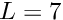.
Next, we build an error estimator and specify the target errors for the mesh adaptation:
Now we have to apply boundary conditions on the various mesh boundaries. [Reminder: If the numbering of the mesh boundaries is not apparent from its documentation (as it should be!), you can use the function Mesh::output_boundaries(...) to output them in a tecplot-readable form.
If the mesh has N boundaries, the output file will contain N different zones, each containing the  coordinates of the nodes on the boundary.]
coordinates of the nodes on the boundary.]
For the RefineableQuarterTubeMesh, the boundaries are numbered as follows:
- Boundary 0: "Inflow" cross section; located along the line parametrised by 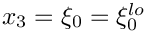 on the
GeomObjectthat specifies the wall. - Boundary 1: Plane

- Boundary 2: Plane

- Boundary 3: The curved wall
- Boundary 4: "Outflow" cross section; located along the line parametrised by
 on the
on the GeomObjectthat specifies the wall.

We apply the following boundary conditions:
- Boundary 0: ( 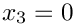) pin all three velocities.
- Boundary 1: ( 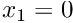) pin
 .
. - Boundary 2: (
 ) pin
) pin  .
. - Boundary 3: ( 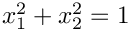) pin all three velocities.
- Boundary 4: ( 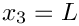) pin
 and
and  .
.
Now we assign the re_pt() for each element and pin the redundant nodal pressures (see another tutorial for details).
We provide an initial guess for the velocity field by initialising all velocity components with their Poiseuille flow values.
Finally, we set the value of Alpha, the exponent that specifies the bluntness of the inflow profile and assign the equation numbers.
Actions before solve
We use the function Problem::actions_before_newton_solve() to re-assign the inflow boundary conditions before every solve. In the present problem this is an essential step because the blunt inflow profile (4) cannot be represented accurately on the initial coarse mesh (see the animation of the axial velocity profiles at the beginning of this document). As discussed in the example that illustrates the use of spatial adaptivity for time-dependent problems, oomph-lib automatically (i) applies the correct boundary conditions for newly created nodes that are located on the mesh boundaries and (ii) assigns the nodal values at such nodes by interpolation from the previously computed solution. This procedure is adequate on boundaries where homogeneous boundary conditions are applied, e.g. on the curved wall, the symmetry and the outflow boundaries. However, on the inflow boundary, the interpolation from the FE representation of the blunt velocity profile (imposed on the coarse initial mesh) onto the refined mesh, does not yield a more accurate representation of the prescribed inflow profile. It is therefore necessary to re-assign the nodal values on this boundary after every adaptation, i.e. before every solve.
Post processing
This function remains exactly the same as in the 2D examples.
Comments and exercises
- Suppress the reassignment of the prescribed inflow profile in
Problem::actions_before_newton_solve()to confirm that this step is essential if the computation is to converge to the exact solution. - Suppress the specification of the parabolic (Poiseuille) velocity profile as the initial guess for the velocity field in the problem constructor to confirm that the assignment of a "good" initial guess for the solution is essential for the convergence of the Newton method. [Hint: You can simply comment out the initialisation of the velocities – they then retain their default initial values of 0.0. When you re-run the code, the Newton iteration will "die" immediately with an error message stating that the maximum residual exceeds the default threshold of 10.0, stored in the protected data member
Problem::Max_residuals. Try increasing the value of this threshold in the Problem constructor. Is this sufficient to make the Newton method converge?]
Source files for this tutorial
- The source files for this tutorial are located in the directory:
demo_drivers/navier_stokes/three_d_entry_flow/ - The driver code is:
demo_drivers/navier_stokes/three_d_entry_flow/three_d_entry_flow.cc
PDF file
A pdf version of this document is available.